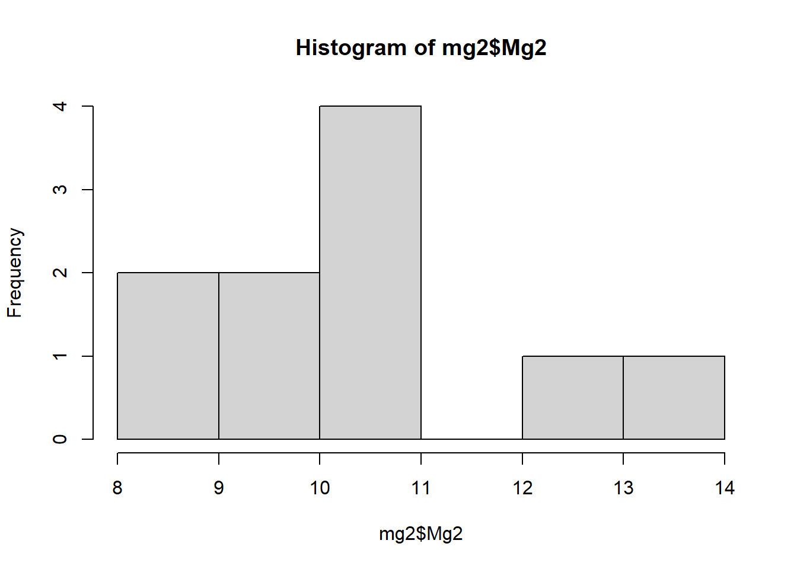
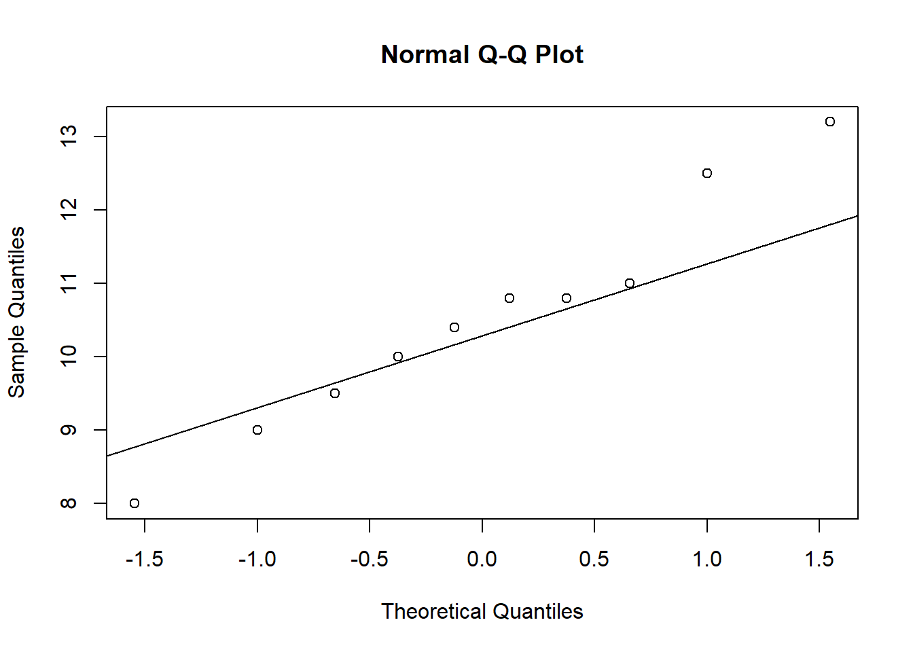

library(gsheet)
library(tidyverse)
library(report)Aula 06 - Estatística inferencial - Teste t
Nesta aula serão apresentados alguns passos para condução da estatística inferencial. Inicialmente, serão conduzidos teste-t e, brevemente, alguns passos para realizar uma análise de variância (ANOVA).
Carregando os pacotes
Pacotes utilizados para realizar ANOVA:
library(emmeans)
library(multcomp)
library(multcompView)
library(DHARMa)
library(performance)Análise inferencial - Teste t
Obtenção dos dados
Os dados serão importados de uma planilha online, utilizado a ferramenta gsheet2tbl (gsheet). O conjunto de dados é referente a avaliação do efeito da suplementação de magnésio (Mg2) sobre o comprimento de lesões.
mg <- gsheet2tbl("https://docs.google.com/spreadsheets/d/1bq2N19DcZdtax2fQW9OHSGMR0X2__Z9T/edit#gid=983033137")
glimpse(mg)Rows: 20
Columns: 3
$ trat <chr> "Mg2", "Mg2", "Mg2", "Mg2", "Mg2", "Mg2", "Mg2", "Mg2", "Mg2", "M…
$ rep <dbl> 1, 2, 3, 4, 5, 6, 7, 8, 9, 10, 1, 2, 3, 4, 5, 6, 7, 8, 9, 10
$ comp <dbl> 9.00, 12.50, 10.00, 8.00, 13.20, 11.00, 10.80, 9.50, 10.80, 10.40…Análise dos dados
Inicialmente, será feito um gráfico do tipo boxplot para analisarmos o conjunto de dados visualmente.
mg %>%
ggplot(aes(trat, comp))+
geom_boxplot(width = 0.5)O gráfico gerado sugere que há diferença no tamanho das lesões em função do tratamento avaliado. Onde a suplementação com Mg2 parece possuir efeito desejável, reduzindo o comprimento das lesões.
Além, o gráfico indica que os dados possuem distribuição normal, pois há simetria em ambos os retângulos; e que também homocedasticidade (homogeneidade das variâncias), já que os dois retângulos possuem tamanho semelhante.
Conversão dos dados
Antes de realizar o teste-t será preciso transformar a tabela para o formato largo (cada tratamento em uma coluna), para isso será utilizada a função pivot_wider (tidyr):
mg2 <- mg %>%
pivot_wider(names_from = trat,
values_from = comp)
glimpse(mg2)Rows: 10
Columns: 3
$ rep <dbl> 1, 2, 3, 4, 5, 6, 7, 8, 9, 10
$ Mg2 <dbl> 9.0, 12.5, 10.0, 8.0, 13.2, 11.0, 10.8, 9.5, 10.8, 10.4
$ control <dbl> 13.72, 15.91, 15.70, 14.20, 15.90, 16.54, 18.00, 14.40, 16.41,…Teste-t
Teste-t para duas amostras independentes
Com base no conjunto de dados recém transformado, será feito um teste t (função t.test, nativa do R) para duas amostras independentes.
t.test(mg2$Mg2, mg2$control)
Welch Two Sample t-test
data: mg2$Mg2 and mg2$control
t = -8.1549, df = 17.354, p-value = 2.423e-07
alternative hypothesis: true difference in means is not equal to 0
95 percent confidence interval:
-6.490393 -3.825607
sample estimates:
mean of x mean of y
10.520 15.678 A partir do resultado do teste, podemos concluir há diferença significativa entre os tratamentos, pois o valor de P foi extretamente baixo (< 0.01).
Verificação das premissas
Para termos confiança no teste realizado é preciso saber se os dados atendem algumas premissas: se há normalidade entre os conjuntos; e se os conjuntos possuem mesma variância.
Teste de normalidade:
- Histogramas
Uma forma de se avaliar a normalidade visualmente é por meio de histograma:
hist(mg2$control)
hist(mg2$Mg2)
Q-Q Plot de normalidade
Outra opção é por meio de Q-Q plots:
qqnorm(mg2$control)
qqline(mg2$control)
qqnorm(mg2$Mg2)
qqline(mg2$Mg2)
Avaliação estatística
A avaliação também pode ser feita utilizando testes estatísticos. Nesse caso, será aplicada a função
shapiro.test(nativa do R):
shapiro.test(mg2$control)
Shapiro-Wilk normality test
data: mg2$control
W = 0.93886, p-value = 0.5404shapiro.test(mg2$Mg2)
Shapiro-Wilk normality test
data: mg2$Mg2
W = 0.97269, p-value = 0.9146Ambas as metodologias demonstram que os dados possuem distribuição normal. Os histogramas possuem formato típico de um conjunto de dados normais. Nos Q-Q Plots, é possível notar que os pontos estão próximo a linha de normalidade. E pelos testes de Shapiro Wilk, não se rejeita a hipótese nula (de normalidade), já que valor de P é maior que o nível de significância adotado (⍺ = 5%).
Teste de homogeneidade
Para avaliação da homogeneidade entre as variâncias será utilizada a função var.test (também nativa do R):
var.test(mg2$control, mg2$Mg2)
F test to compare two variances
data: mg2$control and mg2$Mg2
F = 0.67654, num df = 9, denom df = 9, p-value = 0.5698
alternative hypothesis: true ratio of variances is not equal to 1
95 percent confidence interval:
0.1680428 2.7237436
sample estimates:
ratio of variances
0.6765394 Com o resultado do teste não rejeitamos a hipótese nula (de homogeneidade entre as amostras), pois o valor de probabilidade é superior a 5%. Logo, os tratamentos possuem mesma variância.
Com isso (dados normais, com variâncias homogêneas), podemos confiar no teste-t realizado.
Apresentação dos resultados
A função report (report) pode ser utilizada para gerar um modelo de texto, reportando os resultados obtidos. Para isso atribuímos o teste-t a um objeto e em sequência executamos a função.
teste1 <- t.test(mg2$Mg2, mg2$control)
report(teste1)Effect sizes were labelled following Cohen's (1988) recommendations.
The Welch Two Sample t-test testing the difference between mg2$Mg2 and
mg2$control (mean of x = 10.52, mean of y = 15.68) suggests that the effect is
negative, statistically significant, and large (difference = -5.16, 95% CI
[-6.49, -3.83], t(17.35) = -8.15, p < .001; Cohen's d = -3.65, 95% CI [-5.12,
-2.14])Teste-t para duas amostras dependentes
Para demonstrar a aplicação do test-t pareado (ou para amostras dependentes), utilizaremos um conjunto de dados no qual há resultados de avaliação de doenças antes e após o uso de uma escala de doenças, logo o objetivo será determinar se o uso da escala desempenha algum efeito sobre as avaliações.
Quando há distribuição normal
Obtenção, visualização e seleção dos dados
Os dados serão obtidos de uma planilha excel:
escala <- readxl::read_excel("dados-diversos.xlsx",
sheet = "escala")
glimpse(escala)Rows: 20
Columns: 7
$ assessment <chr> "Unaided", "Unaided", "Unaided", "Unaided", "Unaided"…
$ rater <chr> "A", "B", "C", "D", "E", "F", "G", "H", "I", "J", "A"…
$ acuracia <dbl> 0.8092131, 0.7219848, 0.5595983, 0.8175313, 0.7476691…
$ precisao <dbl> 0.8262697, 0.7284040, 0.7149415, 0.8187018, 0.7532589…
$ vies_geral <dbl> 0.9793570, 0.9911874, 0.7827190, 0.9985702, 0.9925792…
$ vies_sistematico <dbl> 1.1872167, 0.9217054, 1.1600785, 0.9481874, 1.1038873…
$ vies_constante <dbl> 0.1123982, -0.1055045, 0.7301412, -0.0056930, 0.07194…Em seguida, será feito um boxplot para rápida visualização do conjunto de dados:
escala %>%
ggplot(aes(assessment, acuracia))+
geom_boxplot(width = 0.4)Para condução dos testes, serão selecionadas as colunas “assessment”, “rater” e “acuracia”, que serão colocados no formato largo.
escala2 <- escala %>%
dplyr::select( assessment, rater, acuracia) %>%
pivot_wider(names_from = assessment,
values_from = acuracia)
glimpse(escala2)Rows: 10
Columns: 3
$ rater <chr> "A", "B", "C", "D", "E", "F", "G", "H", "I", "J"
$ Unaided <dbl> 0.8092131, 0.7219848, 0.5595983, 0.8175313, 0.7476691, 0.69491…
$ Aided1 <dbl> 0.9067211, 0.9126980, 0.9148087, 0.9598576, 0.9593181, 0.90277…Testar as premissas
Teste de normalidade
A avaliação da normalidade será feita estatisticamente, pelo teste de Shapiro Wilk, com valor de significância (⍺) de 5%:
shapiro.test(escala2$Unaided)
Shapiro-Wilk normality test
data: escala2$Unaided
W = 0.87462, p-value = 0.1131shapiro.test(escala2$Aided1)
Shapiro-Wilk normality test
data: escala2$Aided1
W = 0.92775, p-value = 0.4261Para ambos os tratamentos há normalidade, já que os valores de P foram superiores a 5%.
Teste de homogeneidade
Para avaliação da homogeneidade entre as variâncias, usaremos o teste de variância:
var.test(escala2$Unaided, escala2$Aided1)
F test to compare two variances
data: escala2$Unaided and escala2$Aided1
F = 5.8683, num df = 9, denom df = 9, p-value = 0.01461
alternative hypothesis: true ratio of variances is not equal to 1
95 percent confidence interval:
1.457601 23.625712
sample estimates:
ratio of variances
5.868293 O teste de variância demonstra que não há homogeneidade entre os conjuntos de dados, pois o valor de P é menor que 0,05 (5%). Logo, será preciso indicar no teste t que há heterogeneidade.
Teste t pareado
Como demonstrado acima, os dados possuem distribuição normal, portanto ainda é possível utilizar um teste paramétrico. No entanto, não há homogeneidade de variâncias, o que precisará ser indicado na construção da função.
Para executar o teste t pareado utiliza-se a mesma função (t.test), incluindo dois parâmetros:
paired = TRUE, para indicar amostras dependentes (ou pareadas);e
var.equal = FALSE, para indicar heterocedasticidade.
t.test(escala2$Aided1,escala2$Unaided,
paired = TRUE,
var.equal = FALSE)
Paired t-test
data: escala2$Aided1 and escala2$Unaided
t = 5.9364, df = 9, p-value = 0.000219
alternative hypothesis: true mean difference is not equal to 0
95 percent confidence interval:
0.1144707 0.2554241
sample estimates:
mean difference
0.1849474 Com o teste, é possível concluir que o uso da escala teve efeito sobre a acurácia dos avaliadores (P-valor = 0.000219), onde foi perceptível um aumento de acurácia após o uso da assistência.
Quando não há distribuição normal: teste não paramétrico
Para demonstrar essa situação será utilizado um conjunto de dados similar ao exemplo anterior. No entanto, com alguns valores alterados para não possuir mais distribuição normal.
Obtenção, visualização e seleção dos dados
escala3 <- gsheet2tbl("https://docs.google.com/spreadsheets/d/1bq2N19DcZdtax2fQW9OHSGMR0X2__Z9T/edit#gid=1729131173")escala3 %>%
ggplot(aes(assessment, acuracia))+
geom_boxplot(width = 0.4)escala4 <- escala3 %>%
dplyr::select(assessment, rater, acuracia) %>%
pivot_wider(names_from = assessment,
values_from = acuracia)Testar as premissas
Teste de normalidade
shapiro.test(escala4$Unaided)
Shapiro-Wilk normality test
data: escala4$Unaided
W = 0.7748, p-value = 0.007155shapiro.test(escala4$Aided1)
Shapiro-Wilk normality test
data: escala4$Aided1
W = 0.92852, p-value = 0.4335O teste mostra que não há normalidade para o tratamento “unaided” (valor de p < 0.05), logo será preciso realizar um teste não paramétrico.
Teste de Wilcox
Como o conjunto de dados não possui distribuição normal, será utilizado o teste de Wilcox (wilcox.test). Um teste não paramétrico para amostras dependentes.
wilcox.test(escala4$Aided1,
escala4$Unaided,
paired = TRUE)
Wilcoxon signed rank test with continuity correction
data: escala4$Aided1 and escala4$Unaided
V = 55, p-value = 0.005889
alternative hypothesis: true location shift is not equal to 0Similarmente a situação de normalidade, o teste de Wilcox demonstra que há diferença significativa entre as amostras (P = 0.005 < ⍺ = 0.05), onde o uso da escala influencia positivamente a acurácia dos avaliadores.